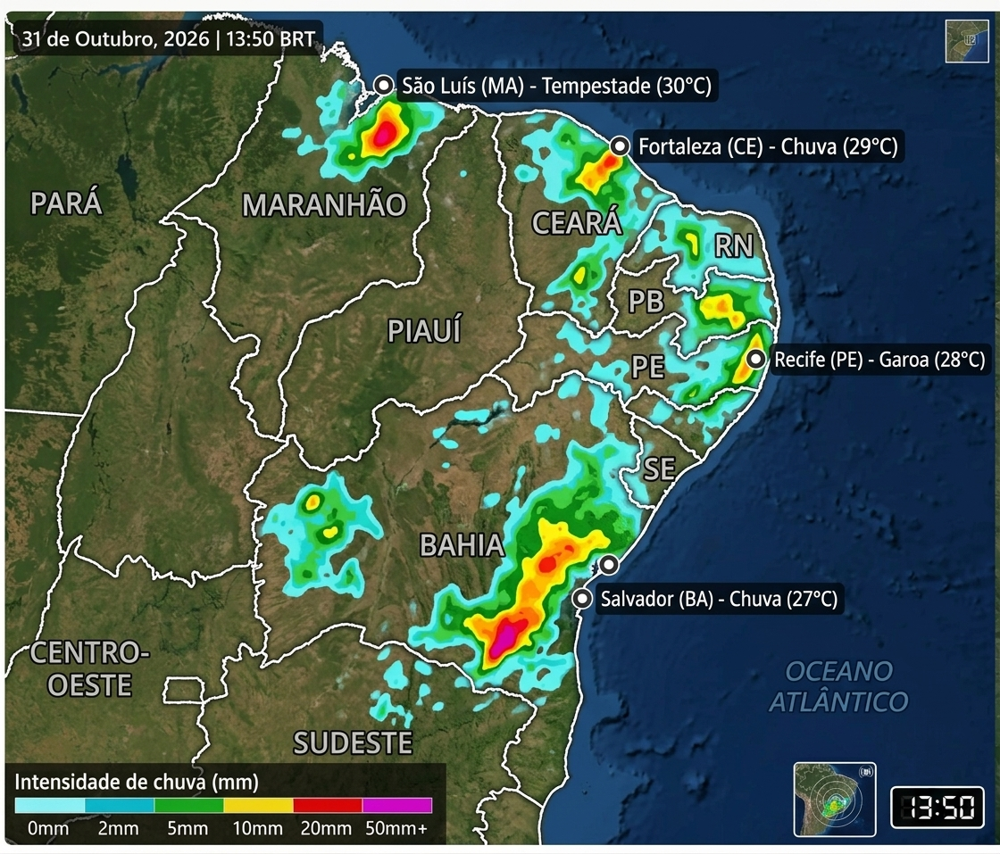

Monitoramento de ventos alísios, umidade litorânea e massa de ar seco no interior.| Período | Média Térmica | Comportamento das Chuvas | Análise Regional / Sinótica |
|---|---|---|---|
| Dias 1 a 5 | 24°C a 31°C | Baixa a Moderada | Predominância de sol no litoral leste e interior, com chuvas passageiras concentradas no período da tarde ou início da noite. |
| Dias 6 a 10 | 25°C a 32°C | Estável / Seco | Fortalecimento dos ventos alísios na faixa costeira norte, garantindo céu aberto e elevação gradual das temperaturas máximas. |
| Dias 11 a 15 | 23°C a 30°C | Instabilidade Isolada | Possibilidade de avanço de frentes frias enfraquecidas pelo litoral sul da região, provocando aumento de nebulosidade na Bahia e Sergipe. |